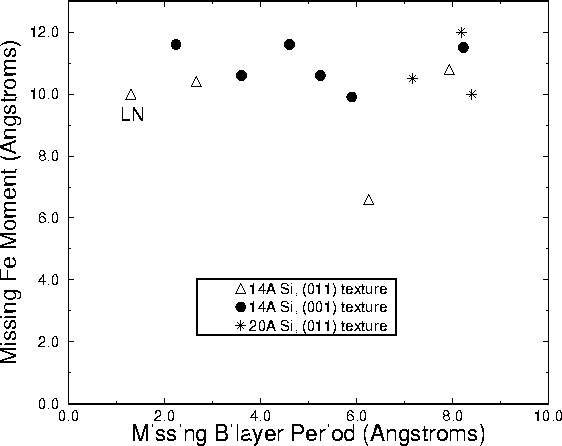

Missing Fe magnetic moment expressed as an equivalent
thickness of Fe plotted versus missing bilayer period as
obtained from fits to small-angle x-ray diffraction data.
Symbols indicate different nominal Si layer thicknesses and
different film textures. The film labelled ``LN'' was grown
on a LN-cooled substrate; all others were grown at nominal
RT. All multilayers have 40 or 50 repeats and were grown on
either glass or oxidized Si substrates.